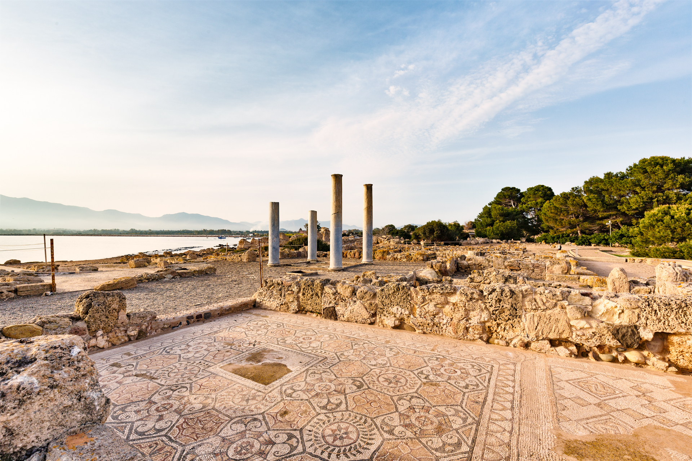
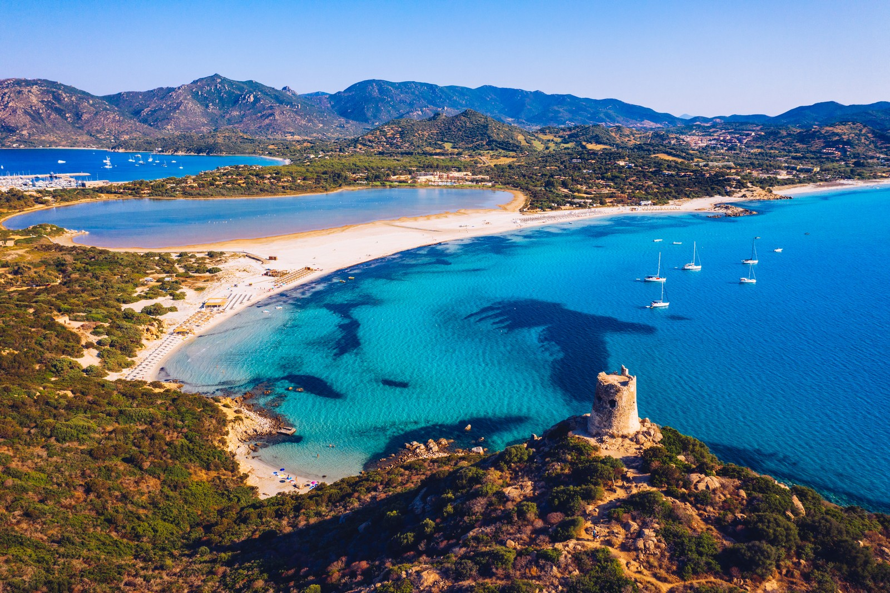
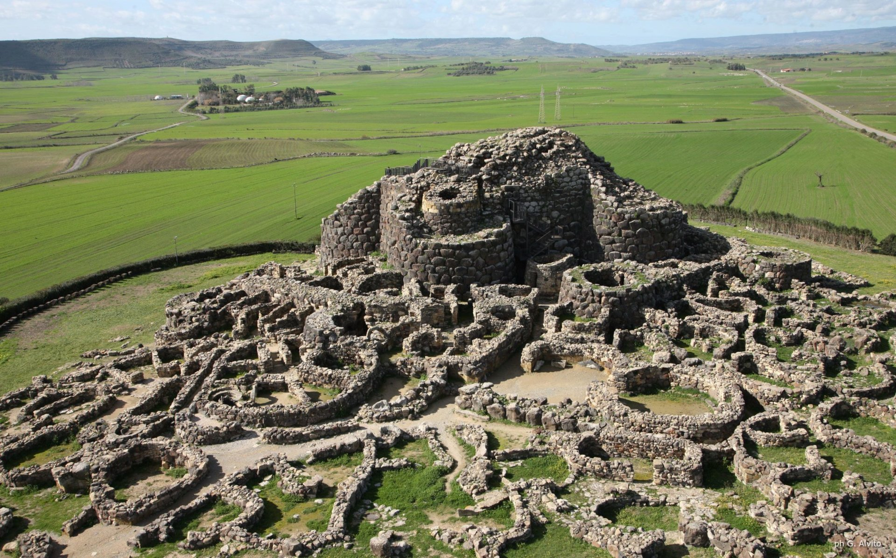
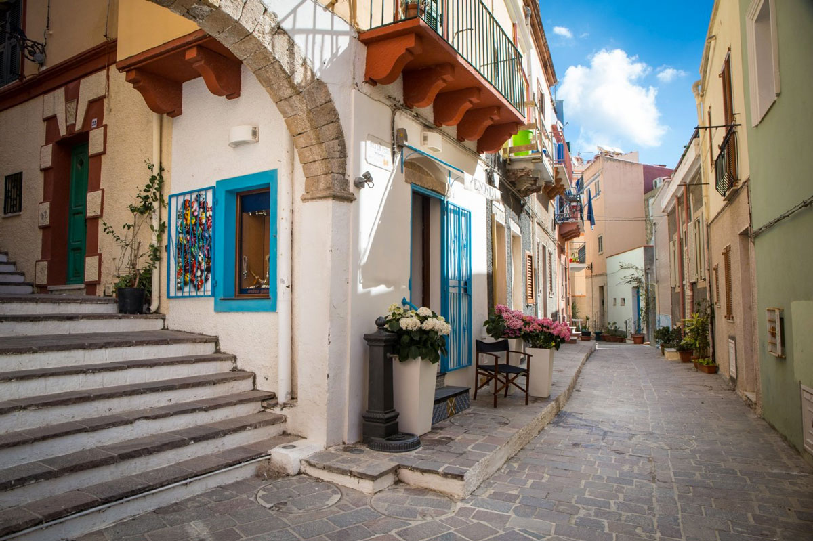

Nora

Located near the town of Pula, Nora is one of the most fascinating archaeological
sites in Sardinia. Founded by the Phoenicians and later developed by the Romans,
the ancient city preserves impressive ruins, including mosaics, Roman baths,
temples and a theatre overlooking the sea. Its unique location makes it a perfect
combination of history and beautiful coastal scenery.
Villasimius

Located on the south-eastern coast of Sardinia, Villasimius is famous for its
spectacular beaches and crystal-clear waters. Places such as Porto Giunco and
Punta Molentis offer breathtaking landscapes, with white sand and shades of turquoise
sea. The surrounding marine protected area is also home to rich marine biodiversity,
making it an ideal destination for swimming, snorkelling and enjoying nature.
Barumini

Barumini is home to Su Nuraxi, the most famous Nuragic archaeological complex in
Sardinia and a UNESCO World Heritage Site. Dating back to the Bronze Age, this
impressive stone fortress offers a glimpse into the mysterious Nuragic civilization
that developed on the island thousands of years ago. Visitors can explore its central
tower, defensive walls and surrounding village, discovering an extraordinary part of
Sardinia's ancient history.
Carloforte

Carloforte is the only town on the Island of San Pietro, located just off the southwestern
coast of Sardinia. Founded in 1738 by Ligurian fishermen coming from Tunisia, it is a
unique cultural enclave known for its pastel-colored houses, narrow alleyways, and local
Genoese dialect. Accessible only by ferry, this charming village is famous for its dramatic
cliffs, crystal-clear coves, and pink flamingos. It is also a renowned culinary destination
celebrated for its ancient bluefin tuna tradition.